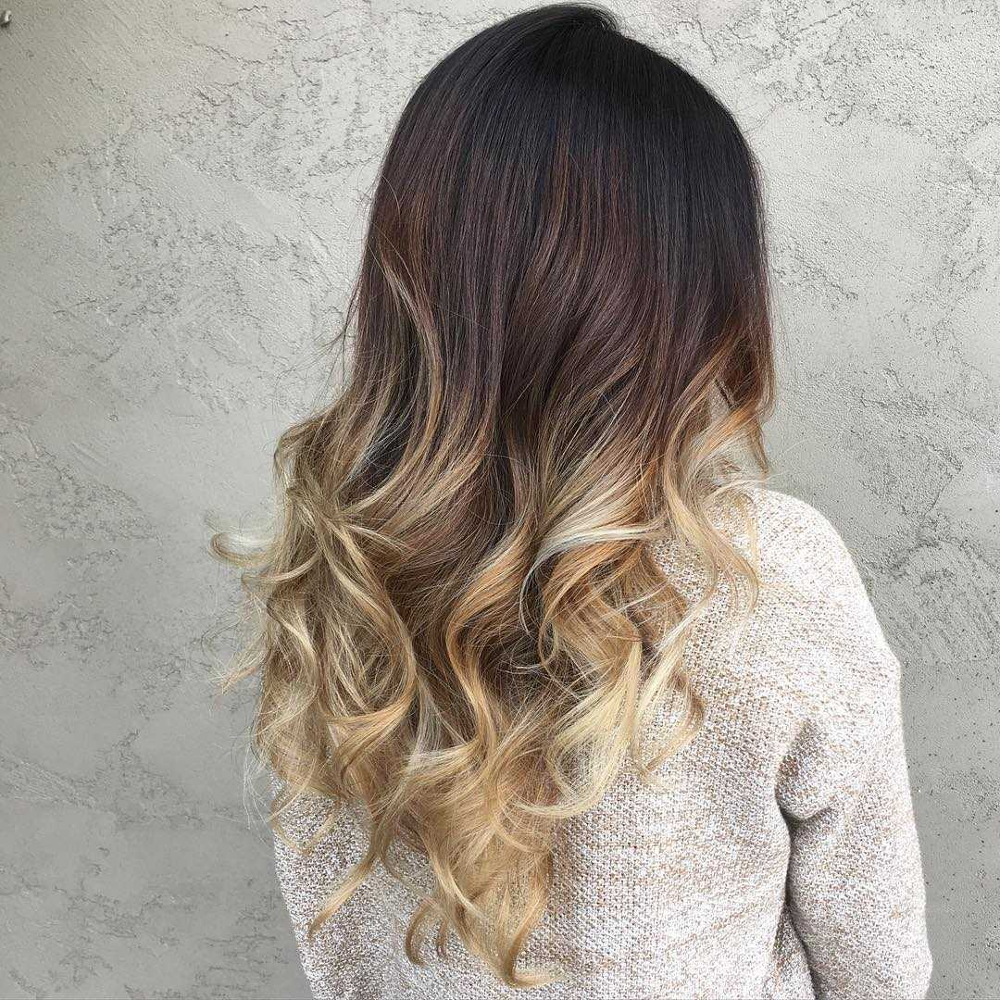
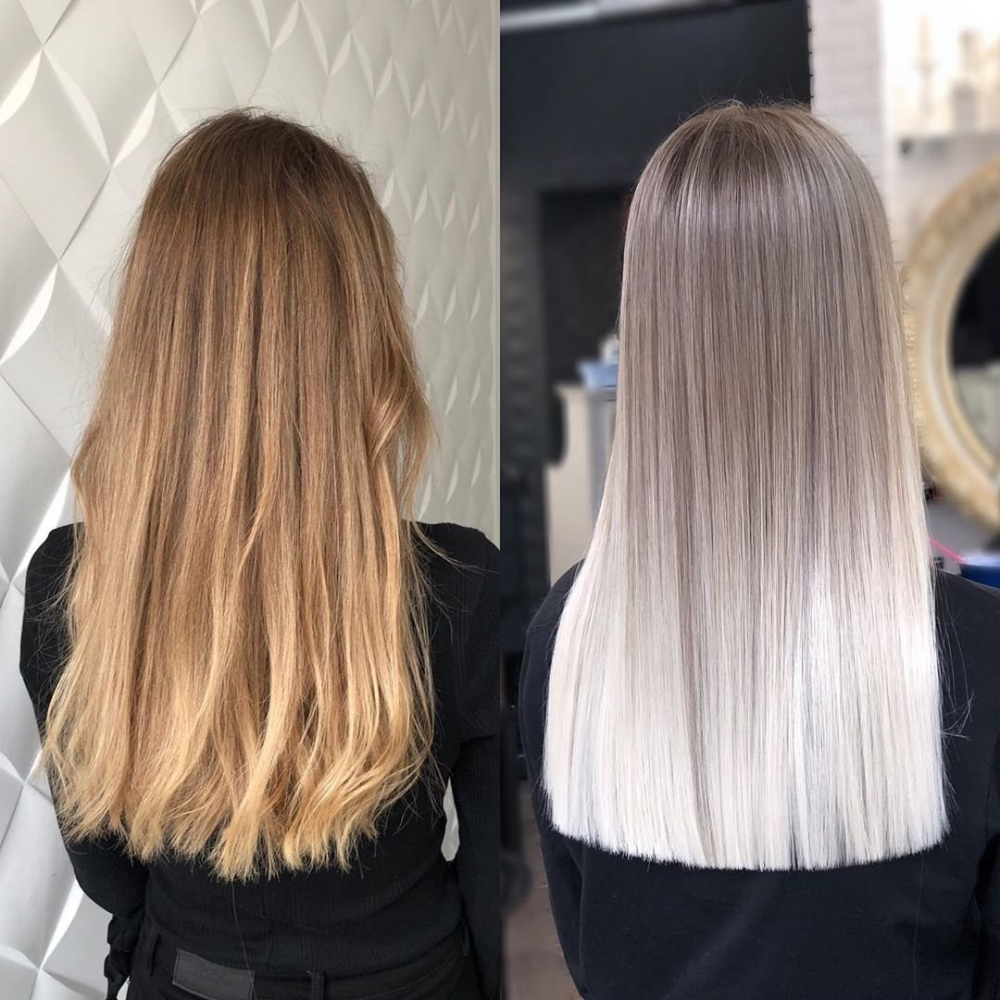

"Цвет волос - это мощный инструмент выражения личности. Позвольте нашим стилистам создать для вас настоящее произведение искусства."
В мире красок и творчества наши стилисты готовы подчеркнуть вашу индивидуальность с помощью профессионального окрашивания.
Наши опытные специалисты используют только высококачественные красители, чтобы достичь наилучших результатов. Мы понимаем, что цвет волос - это не просто изменение, это выражение вашего стиля и настроения.
В процессе окрашивания мы учитываем не только ваш текущий цвет волос, но и вашу индивидуальность. Наши стилисты обладают креативным видением и помогут вам выбрать оттенок, который лучше всего подходит именно вам.
Мы предлагаем широкий спектр услуг по окрашиванию, включая:
Наша команда стремится сделать процесс окрашивания удовлетворительным и комфортным для вас. Мы также используем продукты, которые помогают поддерживать здоровье ваших волос, чтобы результат был не только красивым, но и ухоженным.
Присоединяйтесь к нам в нашей парикмахерской для того, чтобы преобразить ваш облик и создать яркий и стильный образ с помощью профессионального окрашивания.
 